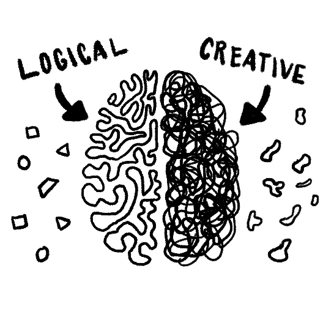

<div class="aboutContainer">
    <div class="container-fluid">
        <div class="row">
            <div class="col">
                <!-- <h1 class="about-title">About Me.</h1> -->
                <div class="about-img-container">
                    
                </div>
            </div>
        </div>
        <div class="row about-section">
            <h1 class="description-titles">Cybersecurity consultant by day, programmer by trade, and designer by passion. </h1>
        </div>
        <div class="row">
            <div class="col brain-img-container">
                
            </div>
        </div>
        <div class="row">
            <div class="col">
                <h4 class="sub-desc-titles">Day Job</h4>
                    <span>
                    I'm a cybersecurity consultant with a knack for solving complex problems
                    and getting the job done. That's how I ended up in my current gig, Deloitte 
                    Cyber where I've been for the past 4 years.

                    <!-- My background consists of a computer science degree with a visual communications
                    minor. I started as a software engineer, but soon realized it wasn't 
                    the place for me. I love to code, but I don't love coding as my job; it's
                    more of a hobby. -->
                    <br><br>
                    I started out in privacy compliance,
                    working with a big tech company maturing an enterprise wide privacy programs to comply 
                    with external regulators and supporting a regulatory audit. 
                    <br><br>
                    Next, I pivoted to 
                    application security, leading a team that performed the operations of a data protection
                    assessment program inside a company's DevOps function. I enjoy supporting my team by
                    providing subject matter expertise on information security topics and helping individuals grow.

                </span>
                <br><br>
                
             </div>
             <div class="col">
                <h4 class="sub-desc-titles">Out Of Office</h4>
                <span>For anyone who knows me personally, I am someone with an unfathomable odd number
                    of hobbies. 
                    <br><br>
                    You name it, I've probably tried it or something similar. To name a few 
                    &mdash; slacklining, rollerblading, biking, hiking, ukulele, bass guitar,
                    baking, indoor skydiving, golfing, making my own coffee, knife throwing, rubix cubing,
                    and programming.
                    <br><br>
                    I'd consider myself a generalist who has an appetite for curious living.
                    I love travel, spending quality time with by girlfriend, Bob's Burgers, cycling,
                    and early bedtimes.
                </span>
             </div>
        </div>
        <div class="row">
            <div class="col">
                <h4 class="sub-desc-titles">My North Star</h4>
                <span>
                    I care a lot about people, inclusion, and fairness. There really is room for everyone 
                    at the table. You just have to scoot over and pull up another chair. I value kindness, imagination, and 
                    making people smile.
                    <br><br>
                    <q><i>I've learned that people will forget what you said, people will forget what you did, 
                        but people will never forget how you made them feel.</i></q> — Maya Angelou
                </span> 
            </div>
            <div class="col">
                <h4 class="sub-desc-titles">Goals</h4>
                <span>
                    <b>Writing: </b>I started writing as a way to finesse my craft and crystallize 
                    my thinking. I don't write about one topic, but rather whatever is on my 
                    mind at the time. 
                    <br><br>
                    <b>Professional: </b>Invest my time, energy, and talents into things
                    that speak to and align with my values.
                    <br><br>
                    <b>Personal: </b>
                    Make and share memories with my loved ones. Listen. Support people. 
                    <!-- Reimagining my destination.  -->
                </span>
            </div>
        </div>

        <!-- Picture section -->
        <div class="imgContainer">
            <main *ngIf="aboutPics$ | async as aboutPics">
                <!-- <pre>
                    {{ aboutPics | json }}
                </pre> -->
                <div class="" *ngFor="let picArray of aboutPics.items">
                    <div *ngIf="picArray.sys.contentType.sys.id == 'aboutPictures'">
                        <div class="img-container" *ngFor="let image of picArray.fields.aboutImages">
                            
                        </div>
                    </div>  
                </div>
            </main>
        </div>

        <!-- End picture section -->
    </div>
</div>
